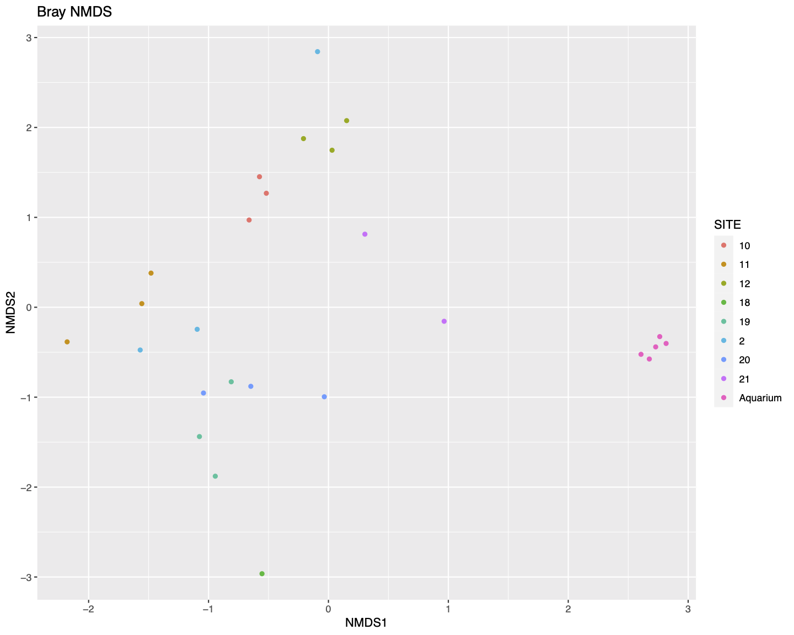

Chapter 13 Biodiversity
In this section you will look at some biodiversity plots of the Lake Tanganyika dataset. These encompas only a few methods to look at biodiversity data.
13.1 Alpha diversity

The alpha diversity plots will use the following metrics.
1. Shannon's diversity index
A measure of diversity where a higher number means higher diversity. Shannon's index accounts for the abundance and evenness of the features present. If richness and evenness increase the diversity score increases. Values can range from one (in case of a single dominant species) to the total number of all species (in case of all species having equal abundance).
Equation:
\[ H = -\sum_{i=1}^{S} p_i lnp_i \]
- H = Shannon diversity index
- pi = is the proportion of species i
- S = Number of species
2. Simpson diversity index A measure of diversity based on number of features present and the relative abundance of each feature. If richness and evenness increase the diversity score increases. The values range from 0 (no diversity) to 1 (infinite diversity).
Equation: \[ D = 1 - {\sum_{i=1}^{S} {p_i} ^{2}} \]
- D = Simpson diversity index
- pi = is the proportion of species i
- S = Number of species
13.1.2 Alpha diversity MCQs
Attempt the following MCQs
Which site has the the lowest diversity?13.2 Beta diversity

Beta diversity compares the difference in diversity between two sites, or to put it another way it calculates the number of species that are not the same in the two sites.
13.2.1 Beta diveristy NMDS
Below is the NMDS (Non-metric MultiDimenstional Scaling) plot using Bray-Curtis distances. The closer the points are the more similar they are in terms of taxonomic composition.
The Bray-Curtis metric is a dissimilarity measure that can quantify the level of difference between two samples. Two identical samples would have a Bray-Curtis measure of 0 (i.e. they have 0 dissimilarity).
There are 2 versions but the one used by QIIME2 looks at the number of features shared by the 2 samples.
Equation:
\[ CBC = 1 – (\frac{2c} {a + b}) \]
- c = # features present in both samples
- a = # features present in sample a
- b = # features present in sample b

In general the samples do seem to cluster roughly by site in the NMDS plot.
13.3 Taxonomic composition
The below plot displays the relative abundances of the different families detected in the samples.

We can see that the five aquarium samples contain mostly Cichlidae sequences, apart from a very small number of unassigned (NA) and misassigned (there were only cichlid fish in the aquarium) sequences. Site 11 has more than 50% unassigned sequences in all three replicate samples. All of the samples containing > 10% Procatopodidae sequences are grouped together in the NMDS plot (especially sites 19 & 20, but also two samples from site 2, and the one sample from site 18), suggesting this may be in part driving the observed patterns of community similarity.